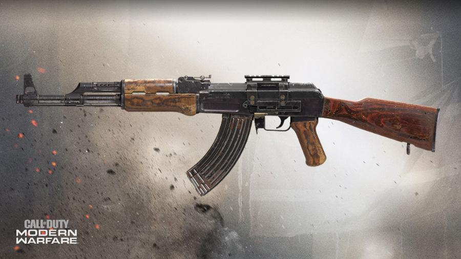

Nu zijn we aangekomen bij de wapens.
De naam van het spel zegt het al, Modern Warfare is een spel gebaseerd op de werkelijkheid op dit moment, dus alle wapens die hier staan bestaan in het echt en worden ook vandaag de dag gebruikt.
Alle wapens hebben ook een gunsmith, wat nieuw is in de call of duty franchise.
In deze gunsmith kan je attatchments toevoegen aan de wapens om ze beter te maken.
De dingen die je kan toevoegen zijn: muzzles, barrels, scopes/optics, stocks, rear grip, magazine, underbarrels, lasers (als in een laser lampje om te richten) en perks.
Assault Rifles (AR's)

De Kilo 141 is jouw beginners assault rifle en is daarmee niet de beste.
Het is een full-auto rifle, net als de meeste wapens in de assualt rifle class, en draagt de titel Alpha.
Het wapen heeft een damage van 73, een fire rate van 73 en 61 mobility.
Over het algemeen is het een goede rifle om mee te starten maar zodra je meer levels omhoog gaat, krijg je steeds betere wapens.
De Fal is een semi auto wapen wat inhoud dat je telkens als je de trigger indrukt maar 1 schot schiet (er is ovverigens wel een perk wat ervoor zorgt dat het wapen burst word).
Het is de 2e rifle die je unlockt en draagt de titel Bravo.
Het wapen doet 79 damage, heeft een fire rate van 59, en heeft een mobility van 60.
De M4A1 staat bekend als de beste assault rifle in de game.
Het wapen draagt de titel Charlie en was in de vroege dagen van modern warfare erg overpowerd.
Ondanks dat het wapen meerdere keren generfed werd (slechter gemaakt), is het nog steeds by far de beste in zijn class.
De M4A1 heeft 72 damage, een fire rate van wel liefst 75 en een mobility van 63.

De FR 5.56 is het enige wapen wat standaart een burst wapen is.
Dit wapen heeft de titel Delta en werd in eerdere call of duty games ook wel de Famas genoemd.
Je ontgrendeld de FR 5.56 op level 16 en het opmerkelijke aan dit wapen is dat het magazijn achter de trigger zit, dit zorgt voor meer mobility en dat de barrel langer word voor meer accuratie.
In het spel word echter de mobility er niet beter op, deze is namelijk 58.
De damage van dit wapen is 62 en de fire rate is 72.

De Oden staat bekend als de slechtste assault rifle in het spel.
Ook dit wapen heeft het magazijn achter de trigger, het wapen word ontgrendeld op level 28 en heeft de titel Echo.
De reden waarom dit wapen zo slecht is, is vanwege de combinatie van een slechte fire rate en van slechte control.
De slechte fire rate van 58 compenseert met een super hoge damage van 79, maar de control van dit wapen is heel slecht, dit betekend dat als je schiet, dat jouw geweer alle kanten op schiet.
De mobility van dit wapen is ook niet al te best, namelijk 56.

De M13 is de op één na beste assault rifle door z'n hoge fire rate en control.
Dit wapen word ontgrendeld op level 39 en draagt de titel Foxtrot.
Het wapen is goed door zijn standaart lage recoil wat het makkelijkt maakt om accuraat te zijn.
Het wapen heeft de damage van 71 en de hoogste fire rate van de assault rifles, namelijk wel 77!
Ook heeft het wapen een mobility van 62.

De FN Scar 17, ookwel de Scar genoemd, wijkt erg af in deze lijst qua kleur.
Dit wapen draagt de naam Golf en word ontgrendeld op level 47.
De damage van de Scar is best goed, namelijk 76 alleen dit wapen heeft de slechtste control van de assault rifle class.
Ook de mobility is erg slecht, namelijk 57, en de fire rate is 63.
Dit wapen is niet een van de beste maar als je leert omgaan met de recoil kan je flinke damage doen.

Het laatste wapen in deze class is een klassieker, namelijk de AK-47.
Dit wapen komt veel voor in de campaign en word daar gebruikt door zowel de Russische troepen (het wapen komt ook uit Rusland) als door de Al Quatala.
De Ak word ontgrendeld op level 58 en draagt de titel Hotel.
De damage is erg goed, namelijk 76 en de fire rate is 61.
De mobility is alleen iets minder goed, naemlijk 59, maar dit wapen heeft meer control dan de Scar.
Sub Machine Guns (SMG's)

De eerste SMG die je krijgt is de AUG, en dit wapen ziet er zeker apart uit.
Bij de AUG zit het magazijn achter de trigger en de stock (de achterkant) is volledig opgevuld.
Dit wapen draagt de titel Alpha en heeft een damage van 70, een fire rate van 72 en de mobility van 65.
In eerdere cod spellen was de aug een assault rifle/LMG maar in dit spel dus een SMG.
Je kan met de gunsmith wel de AUG ombouwen tot een burts assault rifle met een sniper scope, die is erg leuk om te gebruiken, zeker in hardcore.
De P90 word ook ontgrendeld bij level 1 en dit wapen is beter dan de AUG.
Dit wapen komt uit België en is ontworpen voor de Special Forces.
De P90 is erg uniek want het magazijn zit in plaats van onder het wapen er boven op en zorgt daarmee voor veel mobility en ook hier is de stock volledig opgevuld.
Dit wapen draagt de titel bravo en heeft de fire rate van 78, 65 damage en een mibility van 70.
De MP5 is mijn favoriete wapen in de game.
Dit wapen was ook in de vroege dagen van de game overpowerd, op dit moment is hij gelijk aan de andere SMG's maar toch blijft het de favoriet van veel spelers.
De MP5 draagt de tiel Charlie en heeft de damage van 69 en de fire rate van 75.
De reden waarom dit wapen zo geliefd is, is vanwege de hoge mobility (73) en vanwege de handeling: het wapen heeft weinig recoil en is daarmee erg accuraat.

De Uzi één van de twee wapens in de SMG class waarbij het magazijn in de grip zit.
Dit zorgt voor hoge mobility, namelijk 78 en het uiterlijk van een pistol terwijl het wapen gewoon volledig automatisch is.
De Uzi draagt de titel Delta en heeft een fire rate van 64, en een damage van 70.
In de oude Modern Warfare had je ook de Uzi alleen heette die toen de Mini Uzi met een foregrip een geen stock.
Die kan je ook maken in de gunsmith en is erg leuk om te gebruiken.

De PP19 Bizon heeft ook een uniek uiterlijk.